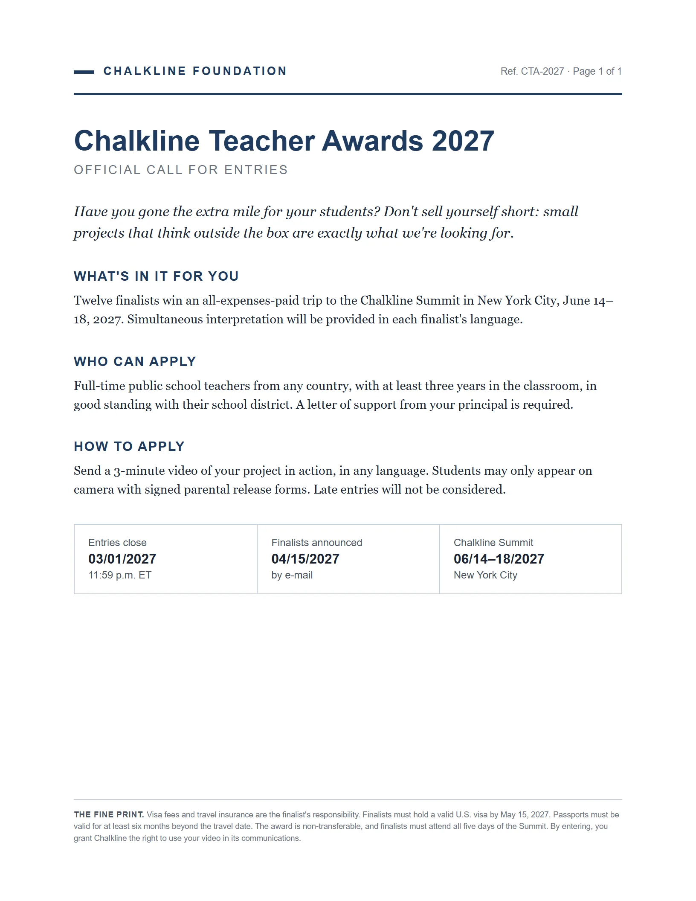

Traduzir e entender um texto em outra língua
Neste exemplo, vamos fazer nossa inscrição em um prêmio internacional de práticas pedagógicas que leva os finalistas para Nova York. Professores do mundo inteiro podem participar e inscrever projetos em suas próprias línguas, mas o edital está todo em inglês.
Full-time public school teachers, in good standing with their school district.
Entries close 03/01/2027 at 11:59 p.m. ET.
"Full-time". Jornada completa. Se 30 horas contam, o edital não diz.
"In good standing". Situação funcional regular. Nada a ver com ficar em pé.
"03/01/2027". Nos EUA o mês vem antes: 1º de março, não 3 de janeiro.
"11:59 p.m. ET". 23h59 em Nova York, onde é o encontro: em Brasília, já é 1h59 do dia 2.
The fine print.
A impressão fina.
As letras miúdas.
Entenda, não só traduza
- No exemplo, encontramos o Chalkline Teacher Awards: um prêmio internacional de práticas pedagógicas que leva os finalistas a um encontro em Nova York.
- O projeto pode ser inscrito em português e o encontro tem tradução simultânea. Não é preciso falar inglês para concorrer, só para entender as regras.
- Vamos em duas etapas: primeiro uma visão geral do edital inteiro; depois, trecho por trecho, com a sua situação.

Baixe o edital
- Edital costuma vir em PDF. No site do prêmio, procure o botão de download ou nomes como "Call for entries", "Official rules" ou "Terms".
- Baixe do site de quem organiza. Edital repassado em grupo de WhatsApp pode estar cortado ou desatualizado.
O prêmio e a fundação são inventados para este exemplo. Caso queira praticar, baixe o PDF de exemplo. Com um edital de verdade, o caminho será o mesmo.
Baixar o edital do exemplo (PDF)Peça ao Gemini
o pedido vem no passo 4Anexe o PDF
- No computador ou Chromebook. O edital é público e não tem dado de aluno: o ChatGPT ou a sua conta pessoal também servem.
- Comece uma conversa nova, só para o edital. Ela vai durar alguns pedidos, e cada um se apoia no anterior.
- Clique no + (no Gemini, Enviar arquivos; no ChatGPT, Adicionar fotos e arquivos) e escolha o PDF na pasta Downloads.
- Anexada, a IA lê o edital inteiro, inclusive o rodapé. Nesta etapa, não precisa copiar nada.
Sou professor de uma escola pública municipal no Brasil, no ensino fundamental, e não leio inglês com segurança. Anexei o edital de um prêmio para professores que leva os finalistas a uma viagem ao exterior. Antes de ler as regras uma por uma, quero uma visão geral para decidir se vale a pena continuar. Resuma o edital em português, em tópicos curtos: - o que é o prêmio e o que o finalista ganha; - quem pode participar; - como se inscrever; - as datas importantes, convertidas para o formato brasileiro (dia/mês/ano) e, quando houver horário, para o horário de Brasília. Sobre as regras, use só o que está escrito no edital. Se algo não estiver escrito, diga que não está.
Peça uma visão geral
- Escreva o pedido na mesma mensagem do PDF anexado e clique na seta. Para pular linha sem enviar: Shift + Enter.
- Formato brasileiro e horário de Brasília: nos EUA o mês vem antes do dia, e o prazo está no horário de Nova York.
- "Use só o que está escrito": sem essa regra, a IA completa o que falta com o que parece provável.
Sou professor de uma escola pública municipal no Brasil, no ensino fundamental…
O que é o prêmio e o que o finalista ganha
- Doze finalistas ganham uma viagem com todas as despesas pagas para o Chalkline Summit em Nova York, de 14 a 18 de junho de 2027. PDF
- Custos de visto e seguro de viagem não são cobertos (são de responsabilidade do finalista). PDF
Como se inscrever
- A forma exata de envio do vídeo (se por formulário, e-mail ou plataforma específica) não está descrita no documento. PDF
Datas importantes
- Encerramento das inscrições: 01/03/2027 às 23:59 ET […] 01:59 da madrugada do dia 02/03/2027 (no horário oficial de Brasília). PDF
- Anúncio dos finalistas: 15/04/2027, por e-mail. PDF
- Prazo limite para ter o visto americano válido: 15/05/2027. PDF
Leia a visão geral
- Cada linha termina num selo PDF. Clique nele para ver de que parte do edital a informação saiu.
- Repare no que não está escrito: o edital não diz por onde enviar o vídeo. Isso vira pergunta para os organizadores.
- As datas já vêm no formato brasileiro. O prêmio interessa? Então vale ler as regras uma por uma.
Agora quero entender o edital ponto a ponto. Vou colar um trecho de cada vez. Minha situação: sou professor efetivo da rede municipal há seis anos, com jornada de 30 horas semanais. Não tenho passaporte. O projeto que eu mandaria foi feito com uma turma de 4º ano: [descreva o projeto]. O que significa: [cole aqui o trecho]
Interessou? Entenda o edital ponto a ponto
- Apresente o seu contexto na conversa e a IA usará essa informação para interpretar os trechos do edital.
- No PDF, selecione um trecho com o mouse, copie com Ctrl + C e cole com Ctrl + V.
Se o Gemini responder "Sou apenas um modelo de linguagem", tente novamente.
Quero tirar três dúvidas com os organizadores antes de me inscrever. Escreva aqui na conversa, sem criar rascunho no Gmail, um e-mail curto em inglês simples com estas perguntas: 1. Minha jornada é de 30 horas semanais. Isso conta como "full-time"? 2. O edital não diz por onde enviar o vídeo. Como faço a inscrição? 3. Se eu for finalista, terei só um mês, de 15 de abril a 15 de maio, para tirar o visto. Posso apresentar o agendamento da entrevista, se ela for depois de 15 de maio? Logo abaixo, escreva a tradução do e-mail em português, para eu saber exatamente o que estou enviando.
Tire as dúvidas por e-mail
- Anote os trechos que você não entendeu ou que não se encaixam na sua situação e escreva as perguntas em português, do seu jeito. Troque as do exemplo pelas suas.
- Leia a tradução antes de enviar: o e-mail tem de perguntar o que você perguntou, sem afirmar nada por você.
- "Sem criar rascunho no Gmail": às vezes o Gemini abre o rascunho direto no Gmail e esquece a tradução. Para saber para qual e-mail enviar, busque no site do prêmio.
A IA explicou o edital em minutos e ajudou a escrever as perguntas. Conferir prazo e requisitos no edital original, e decidir se inscrever, continua sendo com você.